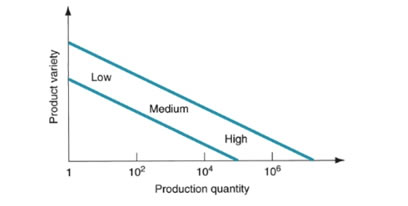

A flexible manufacturing system is basically a manufacturing system which allows the system to suddenly react to abrupt changes, these changes being predicted or unpredicted, such as in the case of a machine failure. Nowadays a manufacturing system needs to be agile. Agility is an important attribute of a manufacturing system, it dictates who is first to the market, who can operate with the lowest costs and who has the best ability to satisfy customers needs and wants. A flexible manufacturing system achieves this goal by its clever setup. The flexible manufacturing system consists of highly automated workstations and processing units which are connected to each other by means of a material handling and storage system, which is an integrated system, which is responsible for moving of the material to consecutive stations within the system, handling the part as well as storing it. The system is controlled by an integrated computer system. The flexible manufacturing system is best suited for medium production and medium product variety as shown in Figure 1.
Figure 1 – graph showing product variety vs production quantity
The reason why this system is called flexible is that it the system is capable of processing a wide variety of part styles, also quantities of production can be altered in response to the ever-changing demand patterns of consumers. This makes the system quite versatile. When talking about flexibility, we see that it applies both to manual and automated systems. In Flexible Manufacturing Production Lines, a mid-volume and mid-variety production is mostly common. Apart from that an FMS can produce a single part family or a limited range of part families. Now a single part family would be a group of parts which possess similar geometric shapes and dimensions. By same reasoning a limited range of part families would imply in being able to produce a limited number of groups containing such parts. The main applications for a Flexible Manufacturing System would be as follows:
• Metal Cutting Machining
• Metal Forming
• Assembly
• Joining Welding
• Gluing
• Surface Treatment
• Inspection
• Testing
The most common application from the mentioned above would be Flexible Machining Systems. By making use of, Computer Numerical Control, also known as CNC machines one can benefit from several capabilities. More over one can connect several CNC machine tools to a small central computer while also planning accordingly automated material handling systems to transfer parts from one machine to the other.